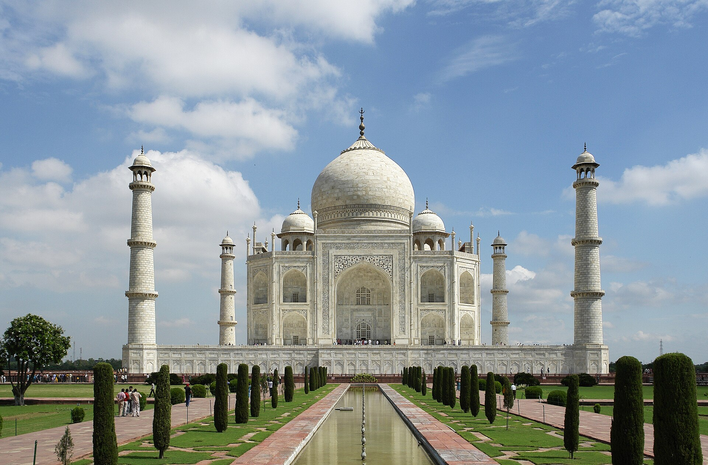
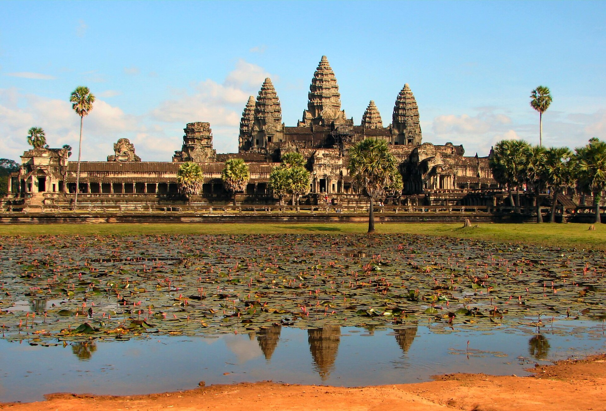
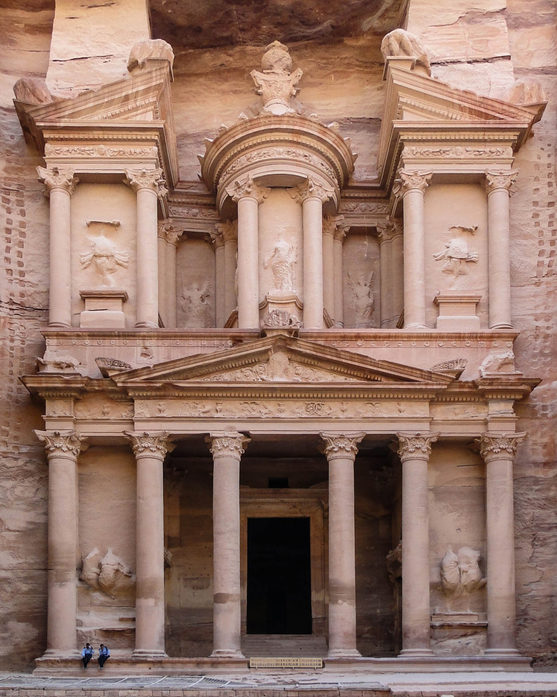
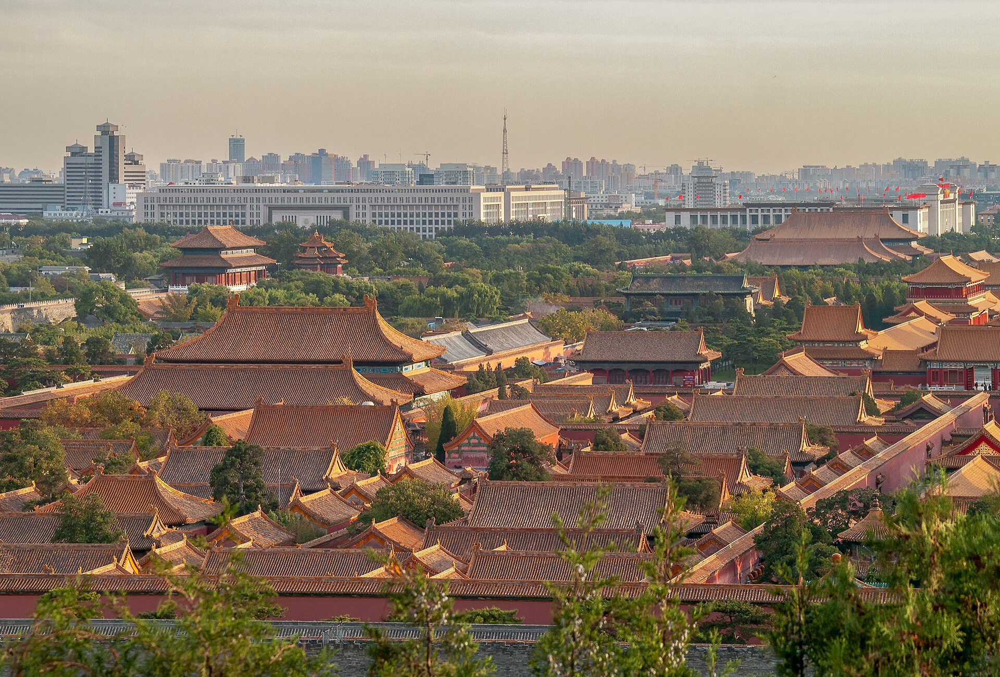
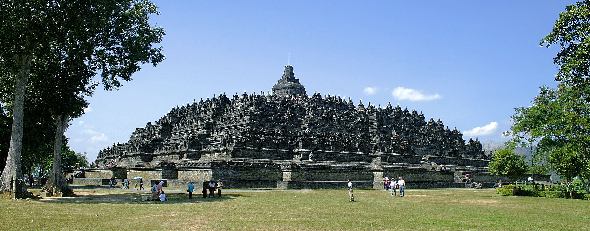
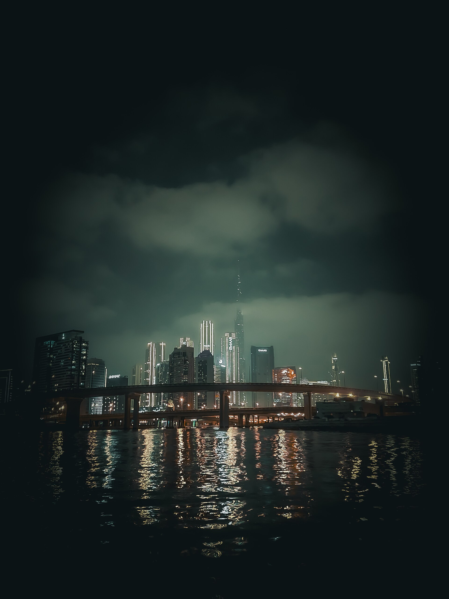

Überblick
Wahrzeichen Asiens spiegeln die enorme geografische und kulturelle Spannweite des größten Kontinents: Kaiserliche Wehranlagen und Paläste, buddhistische und hinduistische Tempelberge, islamische Mausoleen, Felsenstädte der Karawanenwege, heilige Vulkane und hypermoderne Wolkenkratzer liegen teils Tausende Kilometer auseinander und folgen sehr unterschiedlichen Zeitlogiken. Für die Enzyklopädie-Struktur der Geografie ergänzt dieser Artikel den Kontinent-Einstieg Asien um eine Auswahl besonders prägender Landmarken – ohne Rangordnung und ohne Anspruch, Süd-, Ost-, Zentral- oder Westasien gleichgewichtig abzudecken.
Acht Objekte verbinden Antike und Spätantike (Petra), mittelalterliche Tempelkomplexe (Angkor Wat, Borobudur), frühneuzeitliche und dynastische Monumentalität (Taj Mahal, Verbotene Stadt, Chinesische Mauer in ihrer langen Baugeschichte), sakrale Natur (Fuji) und globale Hochhausmoderne (Burj Khalifa). Mehrere Stätten sind UNESCO-Welterbe; andere – wie der Burj Khalifa – sind vor allem technische und städtebauliche Ikonen des 21. Jahrhunderts. Gemeinsam ist ihnen hohe visuelle Wiedererkennbarkeit und eine dichte Schicht aus religiöser, politischer und touristischer Bedeutung.
Asiatische Wahrzeichen entstehen oft in langen Bauphasen oder als Ensembles über Jahrhunderte; „Fertigstellung“ ist bei Mauer, Tempelstadt oder Palastviertel ein relatives Konzept. Koloniale Dokumentation, nationale Symbolpolitik nach der Unabhängigkeit und Massentourismus haben die heutige Wahrnehmung stark überformt. Die Abschnitte unter „Die Wahrzeichen“ skizzieren jeweils Lage und Form, Bau- bzw. Entstehungsgeschichte und spätere Rezeption – mit zurückhaltenden Zahlenangaben, wo Messungen, Datierungen oder Besucherstatistiken unsicher oder definitionsabhängig sind. Wo möglich, werden UNESCO-Einträge, Museumseiten und etablierte Nachschlagewerke herangezogen; offene Forschungsfragen (etwa exakte Bauphasen oder Längendefinitionen der Chinesischen Mauer) werden als solche kenntlich gemacht.
Regionale Streuung bedeutet auch Methodenstreuung: Wer Mauer und Wolkenkratzer, Stupa und Felsenfassade in einem Artikel liest, vergleicht keine identischen Objektklassen, sondern unterschiedliche Weisen, Macht, Heiligkeit und technische Leistungsfähigkeit sichtbar zu machen. Gerade deshalb eignet sich die Wahrzeichenperspektive als Brücke zwischen physischer Geografie, historischer Siedlungsdynamik und heutiger Bildzirkulation – ergänzend zu Klima-, Gebirgs- und Meeresartikeln der Geografie. Die folgende Auswahl bleibt bewusst knapp und lädt zum Weiterlesen in den Kontinent- und Themenartikeln ein.
Die Wahrzeichen
Chinesische Mauer
Die Chinesische Mauer (Changcheng) ist kein einzelnes Bauwerk aus einer Epoche, sondern ein System von Wall-, Mauer- und Festungsstrecken im Norden Chinas, entstanden über viele Jahrhunderte. Frühe Erdwälle der Streitenden Reiche wurden unter Qin Shihuangdi (Ende 3. Jahrhundert v. Chr.) teilweise verbunden; spätere Dynastien – besonders die Ming-Dynastie (14.–17. Jahrhundert) – errichteten steinerne Abschnitte mit Türmen, Toren und Garnisonen, die das populäre Bild der „Großen Mauer“ prägen. Das UNESCO-Welterbe „The Great Wall“ (1987) umfasst repräsentative Abschnitte dieses Netzes.
Funktionen schwankten zwischen Grenzverteidigung, Grenzmarkierung, Kontrolle von Handel und Migration sowie Herrschaftssymbolik. Länge und Erhaltungszustand sind je nach Definition (welche Dynastie, welche Bauart, welche Lücken) unterschiedlich; pauschale „Weltrekord“-Kilometerangaben ohne Methodenangabe sind deshalb unzuverlässig. Heute sind restaurierte Abschnitte bei Beijing (etwa Badaling, Mutianyu) touristische Schwerpunkte, während entlegenere Strecken verfallen oder naturnah wirken. Als Wahrzeichen Asiens und Chinas steht die Mauer für die longue durée imperialer Grenzpolitik und für die Spannung zwischen Mythos einer durchgehenden Linie und archäologischer Vielfalt. Kartierung per Fernerkundung und archäologische Surveys haben in den letzten Jahrzehnten das Bild der Streckenführung verfeinert; zugleich bleibt die Mauer ein nationales Narrativ, das Schulbücher, Tourismus und Populärkultur speist.
Taj Mahal

Das Taj Mahal in Agra (Indien) ist ein weißes Marmor-Mausoleum am Yamuna und UNESCO-Welterbe (1983). Erbaut wurde es unter dem Mogulkaiser Shah Jahan als Grabmal für seine Frau Mumtaz Mahal; die Hauptphase fällt in die 1630er bis etwa 1653 (genaue Abschlussdaten und die Rolle späterer Arbeiten werden in der Forschung differenziert diskutiert). Das Ensemble umfasst das zentrale Grabgebäude mit Kuppel und Minaretten, Moschee, Gästehaus (jawab), Torbau und formalen Char-Bagh-Garten.
Architektonisch vereint es persische, zentralasiatische und indische Traditionen der Mogulzeit: Symmetrie, Kalligrafie, Pietra-dura-Einlagen und reflektierende Wasserachsen. Shah Jahan selbst wurde später ebenfalls im Mausoleum beigesetzt. In britischer Kolonialzeit und nach der Unabhängigkeit Indiens wurde das Taj Mahal zum Nationalsymbol und zu einem der meistbesuchten Monumente Südasiens; Luftverschmutzung und Besuchermanagement sind zentrale Schutzfragen. Als Wahrzeichen steht es für mogulische Hofkultur, islamische Grabarchitektur in Südasien und die globale Ikonisierung eines Liebes- und Herrschaftsmonuments. Die strenge Axialität des Gartens und die Spiegelung der Kuppel im Wasserbecken gehören zu den am häufigsten reproduzierten Bildformeln Südasiens; wissenschaftliche Bauuntersuchungen und Denkmalpflege ringen parallel mit Materialverwitterung und Besucherandrang. Agra selbst liegt in der nordindischen Ebene; Flussnähe, Monsun und Stadtwachstum rahmen den Schutz des Ensembles.
Angkor Wat

Angkor Wat im Norden Kambodschas ist der größte und bekannteste Tempel des Angkor-Komplexes und Teil des UNESCO-Welterbes Angkor (1992). Errichtet wurde er im 12. Jahrhundert unter König Suryavarman II. als dem hinduistischen Gott Vishnu geweihter Staatstempel; später erfolgte eine Umwidmung zum buddhistischen Heiligtum. Die Anlage folgt einem gestuften Tempelnberg-Konzept mit zentralen Türmen, Galerien und einem Wassergraben – Symbolik von Berg Meru und kosmischer Ordnung in Stein.
Angkor war Zentrum des Khmer-Reiches; Bewässerung, Reisanbau und monumentale Bauprogramme hängen eng zusammen. Nach dem politischen Niedergang Angkors blieb Angkor Wat religiös genutzt; in der Neuzeit popularisierten europäische Berichte und Fotografie den Komplex weltweit. Restaurierung (u. a. durch internationale Teams), Tourismus und die Balance zwischen Erhalt und Nutzung prägen die Gegenwart. Auf der kambodschanischen Flagge erscheint die Silhouette der Türme. Als Wahrzeichen Südostasiens verkörpert Angkor Wat die Leistungsfähigkeit vormoderner Urbanität und Sakralarchitektur im Monsunklima. Hydraulische Infrastruktur – Barays (Wasserbecken), Kanäle, Dämme – war Voraussetzung für die Tragfähigkeit der Metropolregion; ihr Niedergang und mögliche klimatische Stressfaktoren werden in der Forschung weiterhin diskutiert, ohne dass ein einziges „Untergangsszenario“ alle Befunde erklärt. Angkor Thom und weitere Tempel ergänzen Angkor Wat zum größeren Siedlungs- und Sakralraum.
Fuji
Der Fuji (Fujisan) ist Japans höchster Berg und ein isolierter Stratovulkan auf der Hauptinsel Honshu. Die Gipfelhöhe wird üblicherweise mit 3776 m angegeben. Der Fuji ist kulturell als heiliger Berg verehrt; Pilgerwege, Schreine und die Abbildung in Kunst (etwa Hokusais „36 Ansichten“) haben ihn zum Nationalsymbol gemacht. UNESCO listet „Fujisan, sacred place and source of artistic inspiration“ als Welterbe (2013) – nicht nur den Gipfel, sondern ein Kulturlandschaftsensemble.
Geologisch gehört der Fuji zum pazifischen Feuerring; historisch dokumentierte Ausbrüche (u. a. Hoei 1707) erinnern an fortbestehende vulkanische Aktivität, auch wenn der Berg heute ruhig wirkt. Sommerliches Bergsteigen, Winteransichten mit Schneehaube und die Silhouette über den Seen der Umgebung tragen zur Wahrzeichenwirkung bei. Für die Geografie Asiens illustriert der Fuji die Verbindung von Subduktionsvulkanismus, dichter Besiedlung in gefährdeten Zonen und sakraler Landschaftsaneignung – ein Naturwahrzeichen, das zugleich religiös und ästhetisch kodiert ist. Frühwarnsysteme und Evakuierungsplanung gehören zur modernen Risikogeografie der Region; zugleich bleibt der Berg ein Ort der Stille und des saisonalen Massenanstiegs auf markierten Routen. Die Sicht vom Fuji auf die Kanto-Ebene – und umgekehrt die Fernsicht auf den Berg – hat Stadt- und Landschaftswahrnehmung in Japan nachhaltig geprägt.
Petra

Petra im heutigen Jordanien ist eine in Sandstein gehauene Felsenstadt der Nabatäer und seit 1985 UNESCO-Welterbe. Blütezeit war vor allem vom späten 1. Jahrhundert v. Chr. bis ins 1./2. Jahrhundert n. Chr., als Petra Knotenpunkt von Karawanenhandel (Gewürze, Weihrauch und andere Güter) zwischen Arabien, Mittelmeer und Mesopotamien war. Berühmt ist die Fassade des Schatzhauses (Al-Khazneh), erreichbar durch die enge Siq-Schlucht; Grabfassaden, Theater, Kultstätten und hydraulische Anlagen zeugen von hoher Ingenieurskunst in aridem Relief.
Römische Annexion, Erdbeben und veränderte Handelswege trugen zum Bedeutungsverlust bei; lokale Kenntnis blieb bestehen, während europäische „Wiederentdeckung“ im 19. Jahrhundert den romantischen Mythos speiste. Heute ist Petra Jordaniens bekanntestes touristisches Ziel; Erosion, Besucherzahlen und die Interessen der lokalen Gemeinschaft (u. a. Beduinen) erfordern sorgfältiges Management. Als Wahrzeichen Westasiens steht Petra für die Anpassung urbaner Kultur an Wüstenrand und Canyonlandschaft – gebaute und gehauene Form in einem. Die nabatäische Schrift und bilinguale Inschriften belegen Vernetzung mit hellenistisch-römischen Welten; archäologische Grabungen erschließen weiterhin Wohnquartiere jenseits der berühmten Fassaden und relativieren das Bild einer „nur“ monumentalen Nekropole. Die Lage im Gebirgsbogen östlich der Arava verbindet Petra mit den Handelswegen der Levante und der Arabischen Halbinsel.
Verbotene Stadt

Die Verbotene Stadt (Gugong / Purple Forbidden City) in Beijing war die Kaiserpalastanlage der Ming- und Qing-Dynastie und ist Teil des UNESCO-Welterbes „Imperial Palaces of the Ming and Qing Dynasties“ (1987). Der Kernbau wurde unter dem Yongle-Kaiser Anfang des 15. Jahrhunderts errichtet und über Jahrhunderte erweitert, repariert und rituell genutzt. Hinter hohen Mauern und dem Graben liegt eine streng axial gegliederte Folge von Höfen, Toren und Hallen – Ausdruck kosmologischer Ordnung und restriktiver Zugänglichkeit (daher „verboten“ für das gewöhnliche Volk).
Nach dem Ende des Kaisertums 1912 wurde die Anlage zum Palastmuseum; politische Umbrüche des 20. Jahrhunderts, Restaurierung und Massentourismus haben Nutzung und Erscheinungsbild weiter geprägt. Holzbauweise, farbige Lackfassungen und Dachziegel machen Brandschutz und laufende Instandhaltung zentral. Als Wahrzeichen Chinas und Ostasiens verdichtet die Verbotene Stadt dynastische Herrschaftsarchitektur, städtische Achsenplanung Beijings und die Umwandlung sakral-politischer Räume in Museen der Moderne. Die Nord–Süd-Achse der Anlage setzt sich in der modernen Stadtplanung Beijings partiell fort; Restaurierung folgt teils traditionellen Handwerkstechniken, teils modernen Konservierungsstandards – ein Spannungsfeld, das für Holzmonumente typisch ist. Für Besucher gliedert sich der Rundgang oft in äußere und innere Höfe; die einstige Zugangsbeschränkung ist museal aufgehoben, die räumliche Hierarchie aber noch lesbar.
Borobudur

Borobudur auf Java (Indonesien) ist der größte buddhistische Stupa-Tempelkomplex der Welt und UNESCO-Welterbe (1991, „Borobudur Temple Compounds“). Errichtet wurde er vermutlich im 8. und 9. Jahrhundert unter der Sailendra-Dynastie als monumentale Steinpyramide mit umlaufenden Galerien, Reliefs und oben abschließendem Stupa. Die Reliefzyklen schildern buddhistische Lehr- und Lebenswege; der Aufstieg der Pilger folgt einer symbolischen Bewegung von der irdischen zur erleuchteten Sphäre.
Vulkanische Asche, Vegetation und Vernachlässigung ließen die Anlage zeitweise in Vergessenheit geraten; im 19. und 20. Jahrhundert folgten Freilegung und große Restaurierungsprojekte (u. a. mit internationaler Unterstützung). Heute ist Borobudur religiöser und touristischer Ort; Erdbeben und Vulkanausbrüche in der Region bleiben Risiken. Als Wahrzeichen Südostasiens steht Borobudur für die Ausbreitung des Mahayana-Buddhismus, javanische Steinbaukunst und die Wiederaneignung vormoderner Sakralräume in modernen Nationalstaaten. Vesakh-Feiern und internationale Besucherströme koexistieren; Debatten über Eintrittspreise, lokale Teilhabe und den Schutz der Reliefs vor Berührung und Feuchtigkeit begleiten den Alltag der Denkmalpflege. Zusammen mit Mendut und Pawon bildet Borobudur eine sakrale Achse in Zentraljava – ein Ensemble, das die buddhistische Landschaft der Insel greifbar macht. Die Steinblöcke aus Andesit fügen sich ohne Mörtel; Stabilität und Drainage bleiben technische Daueraufgaben in tropischem Klima.
Burj Khalifa

Der Burj Khalifa in Dubai (Vereinigte Arabische Emirate) ist ein Wolkenkratzer der 2000er/2010er Jahre und eines der bekanntesten Symbole der Golf-Moderne. Die Eröffnung erfolgte 2010; die architektonische Gestaltung wird Adrian Smith / Skidmore, Owings & Merrill zugeschrieben, Bauherr war Emaar. Mit einer Höhe von 828 m gilt er nach üblicher Messung bis zur architektonischen Spitze als höchstes Gebäude der Welt – Angaben zu „höchstem Bauwerk“ können je nach Definition (Antenne, Turm, bewohnte Etagen) anders ausfallen und sollten methodisch gelesen werden.
Das Gebäude bündelt Wohnen, Hotels, Beobachtungsdecks und Büros und steht im Kontext von Dubais Transformation von Handels- und Hafenstadt zu globalem Dienstleistungs- und Tourismuszentrum. Technisch sind Windlasten, Hochhausaufzüge und Wüstenklima zentrale Herausforderungen. Als Wahrzeichen Westasiens und der Globalisierung illustriert der Burj Khalifa, wie Energieeinkünfte, Imagepolitik und Ingenieurwissen Landschaft und Skyline in kurzer Zeit umschreiben – ein Gegenstück zu den jahrhundertealten Tempel- und Palastwahrzeichen desselben Kontinents. Ob solche Ikonen dauerhaft kulturelle Tiefe gewinnen oder vor allem als Markenzeichen globaler Städtekonkurrenz bleiben, ist eine offene Frage der Stadt- und Kulturgeografie. Der Turm steht am Dubai Fountain Lake und strukturiert das Downtown-Ensemble; nächtliche Beleuchtung und Aussichtsplattformen machen ihn zu einem Erlebnisraum der Vertical City – in einer Region, deren ältere Wahrzeichen eher Festungen, Moscheen und Souks waren.
Quellen
- UNESCO – The Great Wall: https://whc.unesco.org/en/list/438/
- Encyclopaedia Britannica – „Great Wall of China“: https://www.britannica.com/topic/Great-Wall-of-China
- UNESCO – Taj Mahal: https://whc.unesco.org/en/list/252/
- Encyclopaedia Britannica – „Taj Mahal“: https://www.britannica.com/topic/Taj-Mahal
- UNESCO – Angkor: https://whc.unesco.org/en/list/668/
- Encyclopaedia Britannica – „Angkor Wat“: https://www.britannica.com/topic/Angkor-Wat
- UNESCO – Fujisan, sacred place and source of artistic inspiration: https://whc.unesco.org/en/list/1418/
- Encyclopaedia Britannica – „Mount Fuji“: https://www.britannica.com/place/Mount-Fuji
- UNESCO – Petra: https://whc.unesco.org/en/list/326/
- Encyclopaedia Britannica – „Petra“: https://www.britannica.com/place/Petra-ancient-city-Jordan
- UNESCO – Imperial Palaces of the Ming and Qing Dynasties in Beijing and Shenyang: https://whc.unesco.org/en/list/439/
- Encyclopaedia Britannica – „Forbidden City“: https://www.britannica.com/topic/Forbidden-City
- UNESCO – Borobudur Temple Compounds: https://whc.unesco.org/en/list/592/
- Encyclopaedia Britannica – „Borobudur“: https://www.britannica.com/topic/Borobudur
- Encyclopaedia Britannica – „Burj Khalifa“: https://www.britannica.com/topic/Burj-Khalifa
- Council on Tall Buildings and Urban Habitat – tall building criteria (methodological reference): https://www.ctbuh.org/